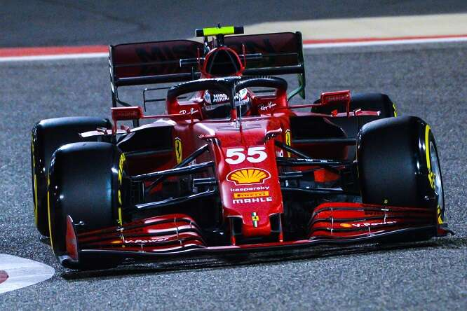

Carlos Sainz Vázquez de Castro noto come Carlos Sainz Jr. È nato a Madrid il 1º settembre 1994, è un pilota automobilistico spagnolo, attivo in Formula 1 con la Ferrari. Ha corso nella massima categoria con la Toro Rosso dal 2015 al 2017, con la Renault tra il 2017 e il 2018 e con la McLaren dal 2019 al 2020. Dal 2021 è al volante della Ferrari. È figlio del pilota, due volte vincitore del campionato del mondo rally, Carlos Sainz. Il suo numero di gara è il 55. Nel 2013 prende parte ai test di Silverstone al volante sia della Toro Rosso, sia della Red Bull, mentre nel novembre del 2014 partecipa ai test di Abu Dhabi alla guida di una RB10 della Red Bull. Il 28 novembre 2014 è stato annunciato il suo ingaggio da parte della Scuderia Toro Rosso per il campionato mondiale di Formula 1 2015, al fianco di Max Verstappen. Al Gran Premio d'esordio in Australia Sainz si dimostra competitivo, ma a causa di problemi al pit stop termina la gara al nono posto, ottenendo con tale piazzamento i primi punti iridati. In Malesia ottiene di meglio, chiudendo ottavo. In Cina non guadagna alcun punto, né tantomeno in Bahrain dove si ritira per un guasto meccanico. In Spagna chiude nono dopo aver raggiunto la quinta posizione in qualifica. A Monaco arriva decimo dopo essere partito dalla corsia box. Dal Gran Premio del Canada a quello di Monza non ottiene nessun punto, complice i tanti ritiri. A Singapore chiude nono, dietro al compagno di squadra Max Verstappen. In Giappone chiude decimo. Nel finale di stagione ottiene solo un piazzamento a punti, nel Gran Premio degli Stati Uniti, dove chiude in settima posizione. Conclude la stagione al 15º posto, con 18 punti conquistati.  Le prime gare con la McLaren si rivelano deludenti, infatti nei primi tre Gran Premi Sainz non riesce a far segnare punti. Con il proseguire della stagione Sainz riesce invece a sfruttare la ritrovata competitività della monoposto di Woking, che assieme al compagno di squadra Lando Norris condurrà al quarto posto finale in classifica costruttori. In particolare, lo spagnolo giunge costantemente a punti dal Gran Premio dell'Azerbaigian, finendo per essere spesso il primo dei piloti che non guidano una Mercedes, una Ferrari o una Red Bull. Il pilota iberico culmina la propria annata con il suo primo podio in carriera (nonché il primo per la McLaren dal 2014), ovvero una terza posizione al Gran Premio del Brasile, complice una penalità inflitta a Lewis Hamilton. Pur rispettando gli accordi con McLaren anche per la stagione 2020, inizialmente rinviata a causa della pandemia di COVID-19, il 14 maggio 2020 lo spagnolo sigla un contratto biennale con la Ferrari, valevole a partire dal 2021, in sostituzione di Vettel. L'ultima stagione nella scuderia britannica si apre con un convincente quinto posto nel Gran Premio d'Austria, miglior risultato in carriera dell'iberico su tale tracciato. Sempre nello stesso circuito, in occasione del seguente Gran Premio di Stiria, Sainz segna il suo primo giro più veloce in carriera, stabilendo peraltro il nuovo record di tempo su pista, dopo aver ottenuto il suo miglior risultato di sempre in qualifica con un terzo posto. Le gare seguenti sono poco fortunate per Sainz, che subisce una foratura nel Gran Premio di Gran Bretagna mentre si trova in quarta posizione, e non riesce nemmeno a partire al Gran Premio del Belgio per problemi alla power unit ed allo scarico. Il 6 settembre 2020, Sainz conquista il suo primo secondo posto in carriera, nel rocambolesco Gran Premio d'Italia, riportando la McLaren sul podio di Monza dopo 8 anni dall'ultima volta. Dopo due ritiri, il pilota spagnolo giunge a punti in tutte le ultime sette gare della stagione: nel Gran Premio del Portogallo è autore di un'ottima partenza che lo porta dalla settima alla prima posizione in due giri, ma la vettura non gli consente di andare oltre la sesta posizione finale; successivamente arrivano tre piazzamenti nei primi 5 consecutivi tra il Gran Premio di Turchia e le due gare in Bahrein. Sainz conclude la stagione con la sesta posizione in classifica come l'anno precedente, ma con 9 punti in più nonostante il minor numero di gare dovuto alla pandemia di COVID-19, permettendo alla McLaren di arrivare terza nella classifica costruttori. Nel 2021 diventa pilota della Scuderia Ferrari, affiancando Charles Leclerc. Il 28 gennaio 2021 Sainz guida la sua prima monoposto Ferrari, la SF71H, sul Circuito di Fiorano, per dei test privati organizzati della Ferrari. Nella prima gara della stagione, il Gran Premio del Bahrein, Sainz arriva ottavo, mantenendo il posto che aveva ottenuto il giorno prima nelle sessioni di qualifica. Nella gara successiva ad Imola arriva quinto partendo dall'undicesima posizione. Torna a punti nel suo Gran Premio di casa, in cui giunge settimo. Il primo podio con la Ferrari arriva nel Gran Premio di Monaco, con un secondo posto dietro a Max Verstappen. In Austria, dopo un'eliminazione in Q2, Sainz rimonta fino alla sesta posizione, diventata quinta in seguito a una penalità di Sergio Pérez. Il 1 agosto 2021, nel Gran Premio d'Ungheria, Sainz conquista il suo secondo podio in stagione al suo primo anno nella scuderia di Maranello finendo la gara in quarta posizione, diventata successivamente una terza posizione a causa della squalifica di Sebastian Vettel al termine del gran premio. Nel Gran Premio di Russia, dopo essere partito per la prima volta in prima fila, ottiene il terzo podio con la Ferrari, arrivando terzo. Nelle gare seguenti ottiene sempre piazzamenti a punti; nel Gran Premio di San Paolo si classifica terzo nella Sprint Qualifying, ma in gara conclude al sesto posto. Nel Gran Premio di Abu Dhabi riesce ad ottenere il quarto podio con la squadra italiana arrivando terzo. La stagione si conclude con il quinto posto in classifica generale, miglior risultato in Formula 1 per lo spagnolo, e 164,5 punti, 5,5 in più rispetto al compagno Leclerc. Sainz è anche l'unico pilota a terminare tutte e 22 le gare della stagione.